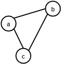
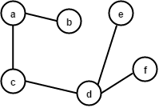
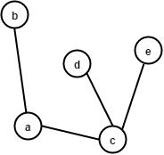
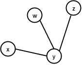
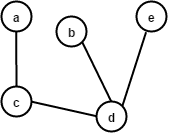
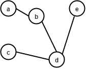

Mathematik
Eine Wissenschaft die abstrakte Strukturen definiert und deren
Eigenschaften mittels logischer Schlüsse untersucht.
Graph
Ein Graph besteht aus einer Menge von Knoten und Kanten.

Oft werden die Knoten als Kreise dargestellt und deren Kanten als
Linien dazwischen.
Das ist entsprechend also ein Graph mit 4 Knoten und 2 Kanten.
Es gibt viele Anwendungsfälle für Graphen, etwa Routenfindung oder
Empfehlungen auf eCommerce Plattformen.
Weg
Eine Folge von Knoten, in welcher jeweils zwei aufeinander folgende
Knoten durch eine Kante verbunden sind.
In diesem Graph gibt es die Wege [a, c], [c,
b] und [a, c, b]. Die Reihenfolge spielt
hier keine Rolle.
Zyklus
Ein Weg in einem Graphen, bei dem Start- und Endknoten gleich sind,
jedoch keine Kante zweimal vor kommt.
Der folgende Graph enthält keinen Zyklus, da es nicht möglich ist
von a wieder nach a zu kommen ohne eine Kante mehrfach
im Weg zu haben.
Fügen wir eine Kante hinzu, so erhalten wir einen Graphen mit
mehreren Zyklen.

Zusammenhang
Ein Graph ist zusammenhängend, wenn es zwischen allen Knoten einen Weg
gibt.

Dieser Graph ist zusammenhängend, da zwischen allen Knoten ein Weg
existiert.
Nehmen wir eine Kante weg, so gibt es einen Knoten von/zu dem es
keinen Weg von den anderen Knoten mehr gibt. Der Graph ist somit
nicht mehr zusammenhängend.
Baum
Ein Graph ist ein Baum, wenn alle Knoten durch genau einen Weg
verbunden sind.
Dieser Graph ist ein Baum. Zwischen allen Knoten existiert genau
EIN Weg.

Fügen wir eine Kante zwischen b und d hinzu, so ist
der Graph kein Baum mehr, da es dann mehrere Wege zwischen vielen
Knoten gibt.
Von a nach d kommt man nun via [a, b,
d] aber auch via [a, c, d].
Teilgraph
Ein Graph H ist Teilgraph des Graphen G, wenn alle Knoten und Kanten
von H auch in G enthalten sind.
Sei dies ein Graph G:

Und dies Graph H:
Dieser Graph H ist kein Teilgraph von G, da er mehr
Kanten als G hat.
Sei dies ein Graph I:

Der Graph I ist ein Teilgraph von G, da die Knoten so
miteinander verbunden sind wie a, c, d und
e im Graph G. Die konkrete Position des Graphen,
sowie die Beschriftung, spielt auch hier keine Rolle.
Spannbaum
Ein Teilgraph eines Graphen, der ein Baum ist und alle Knoten dieses
Graphen enthält.
Folgender Graph besitzt mehrere Spannbaeume:
Dies sind 2 moegliche Spannbaeume:


Grad
Der Grad eines Knoten ist die Anzahl der Kanten, die ihn mit anderen
Knoten verbinden.

Im folgenden Graph sind die Knoten mit ihrem Grad beschriftet.